Instant Tennis Lessons: Cẩm Nang Bài Học Quần Vợt Cấp Tốc — Tennis Magazine

Bản dịch Việt ngữ này chỉ dùng cho mục đích học tập cá nhân, phi thương mại. Bản quyền tác phẩm gốc thuộc về tác giả và nhà xuất bản.
Phần 1: Bí Quyết Cầm Vợt Chuẩn Xác & Cú Đánh Thuận Tay Hoàn Hảo
Chương 1: Sửa Đổi Cầm Vợt Cấp Tốc: Gốc Rễ Của Mọi Lỗi Kỹ Thuật
Chapter 1: Quick Grip Corrections: The Root of All Stroke Mechanics
NỘI DUNG GIỚI THIỆU .
GRIP 2s.
TAY THÚC.
TRÁI DeaVvVeE.
THẬT LÀ .
BeBe.
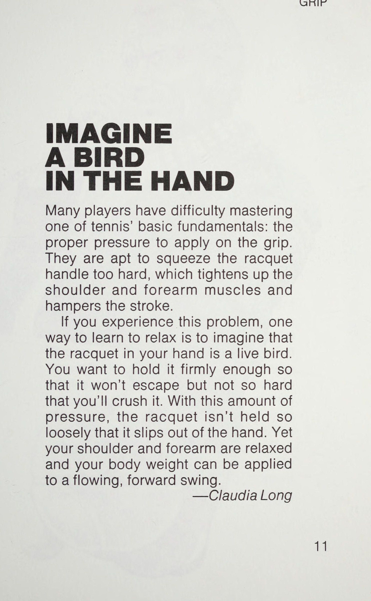
TRÊN ĐẦU.
Mek yoo AT . 181 HÃY tưởng tượng một chú chim trong tay (Bird in the Hand) Nhiều tay vợt gặp khó khăn trong việc nắm vững một trong những nguyên tắc cơ bản của quần vợt: áp lực thích hợp để tác động lên tay cầm.
Họ có xu hướng bóp cán vợt quá mạnh, điều này làm căng cơ vai và cẳng tay và cản trở cú đánh.
Nếu bạn gặp phải vấn đề này, một cách để học cách thư giãn là tưởng tượng cây vợt trong tay bạn là một con chim sống.
Bạn muốn giữ nó đủ chắc để nó không thoát ra ngoài nhưng không quá mạnh đến mức khiến nó bị nát. Với lượng áp lực này, vợt không được giữ lỏng lẻo đến mức tuột khỏi tay. Tuy nhiên, vai và cẳng tay của bạn vẫn được thư giãn và trọng lượng cơ thể của bạn có thể được dồn vào một cú xoay người về phía trước.
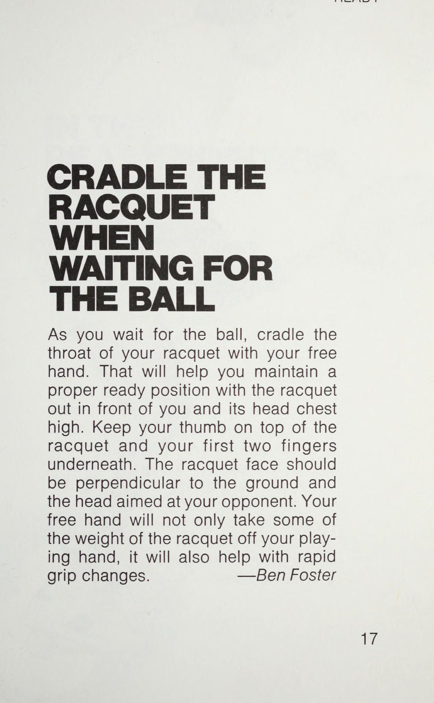
—Claudia Tay cầm dài SỰ ỔN ĐỊNH TRONG NÚT TAY CỦA BẠN Bạn gặp khó khăn trong việc thực hiện các cú đánh ổn định? Hãy thử cầm chắc hơn. Bạn có thể tăng cường sức mạnh cho ngón tay, bàn tay và cổ tay bằng cách bóp một quả bóng tennis cũ vài lần trong ngày, khi đang xem tivi, đi tàu hoặc xe buýt đi làm hoặc bất cứ lúc nào bạn có thời gian rảnh rỗi. Tay cầm chắc chắn sẽ giúp bạn đạt được những cú đánh ổn định, đồng thời tránh bị đau khuỷu tay. Tuy nhiên, đừng bóp vợt quá chặt đến nỗi nhựa chảy ra hết đáy cán vợt!
—William M. Summers GRIP SẴN SÀNG BẰNG VỢT KHI CHỜ BÓNG Khi bạn chờ bóng, hãy giữ cổ vợt bằng tay còn lại. Điều đó sẽ giúp bạn duy trì tư thế sẵn sàng thích hợp với cây vợt đưa ra trước mặt bạn và đầu vợt cao ngang ngực. Giữ ngón tay cái của bạn ở phía trên vợt và hai ngón tay đầu tiên ở bên dưới. Mặt vợt phải vuông góc với mặt đất và đầu vợt hướng về phía đối thủ. Bàn tay tự do của bạn sẽ không chỉ giảm bớt một phần trọng lượng của vợt khỏi tay bạn chơi mà còn giúp thay đổi cách cầm vợt nhanh chóng.
—Ben Foster nằm ở tư thế SẴN SÀNG, HƯỚNG DẪN CÓ MỘT BÓNG DƯỚI GÓT CỦA BẠN Lần tiếp theo khi bạn định vị mình trên lưới, hãy giữ nguyên tư thế nhón chân bằng cách tưởng tượng rằng có một quả bóng tennis ở dưới mỗi gót chân của bạn. Tiếp tục quay lại vị trí sẵn sàng này sau mỗi cú vô lê, không bao giờ để gót chân chạm đất. Những quả bóng tennis tưởng tượng sẽ mang lại cho bạn độ nảy mà bạn cần có khi di chuyển nhanh trên lưới. Tất nhiên, bạn không bao giờ nên đặt một quả bóng thật dưới chân mình; điều đó có thể khiến bạn vấp ngã. Nhưng hãy kiễng chân lên như thể những quả bóng tennis tưởng tượng đang ở dưới gót chân bạn.
—Steve Greenberg SẴN SÀNG CÓ SẴN SÀNG CHỜ ĐỢI TRỌNG LƯỢNG CỦA BẠN PHÍA TRƯỚC Khi bạn chờ đối thủ thực hiện cú đánh của mình, hãy giữ trọng lượng của bạn hướng về phía trước bằng cách đứng trên bi của bàn chân bạn. Điều đó sẽ cho phép bạn di chuyển nhanh chóng theo bất kỳ hướng nào mà không bị chậm trễ trong việc nâng trọng lượng lên và về phía trước khi bạn chuẩn bị theo đuổi quả bóng sắp tới. Nếu bạn luôn dồn trọng lượng cơ thể lên phần đầu bàn chân, bạn sẽ tiếp cận được tất cả các quả bóng sớm hơn.
—John A. Kraft Jr.
Chương 2: Cú Thuận Tay Hoàn Hảo (The Flawless Forehand Drive)
Chapter 2: The Flawless Forehand Drive: Shoulder Turn, Knee Flex, and High Finish
SẴN SÀNG SẴN SÀNG BẰNG CẢ HAI TAY TRÊN VỢT Lái ô tô chỉ với một tay trên vô lăng là mệt mỏi và nguy hiểm. Việc chỉ sử dụng một tay để dẫn hướng vợt khi chuẩn bị cho cú đánh tiếp đất cũng gây mệt mỏi tương tự và chắc chắn dẫn đến việc xác định vị trí của cơ thể không đúng. Giữ hai tay trên “bánh xe” khi bạn ở vị trí sẵn sàng và khi bóng đến gần, hãy sử dụng tay còn lại của bạn để dẫn vợt lùi lại. Điều đó sẽ kích hoạt việc tự động xoay vai của bạn và giúp bạn chuyển trọng lượng phù hợp.
—Donna B. Jaquith CÓ nigga ttctionw tev eenanecatnndtonctee: *’ j py ae THUẬN TAY BẮT ĐẦU NGAY Ngay khi bạn nhìn thấy bóng rời khỏi vợt của đối thủ, hãy bắt đầu chạy đến khu vực chung nơi bóng đang hướng tới. Đừng đợi cho đến khi bóng bay qua lưới. Bạn chỉ có thể làm chủ số phận của mình nếu bạn và cây vợt của mình đến đúng giờ.
—Paul S. Fein ah đã xé nát cú CHẠY THUẬN TAY VỚI MẶT TRƯỚC VỢT CỦA BẠN Đã bao nhiêu lần bạn thực hiện cú trả bóng tương đối dễ dàng, chạm bóng và sau đó đánh hỏng? Có vài điều khó chịu hơn trên sân. Tại sao nó xảy ra?
Thông thường, vấn đề là bạn đã sơ suất trong việc lấy lại vợt của mình sớm. Đừng đợi cho đến khi bạn nhận được bóng mới bắt đầu động tác backswing. Chạy với vợt về phía sau và bạn sẽ sẵn sàng cho cú đánh ngay khi bạn đến vị trí. Thời điểm bắt đầu thực hiện động tác backswing là khi bóng rời khỏi vợt đối phương và bạn đã quyết định thực hiện cú đánh bằng tay trái hoặc thuận tay. Sau đó, hãy sẵn sàng bắt đầu vung vợt về phía trước vào khoảng thời gian bóng nảy lên.
Hãy nhớ rằng, chính cú backswing sớm sẽ mang lại kết quả tốt.
—Vince Eldred Zo THUẬN TIỆN XOAY VAI ĐỂ CÓ NHIỀU SỨC MẠNH Nếu cú đánh mặt đất của bạn thiếu lực, bạn có thể đánh bóng mà không xoay vai sang một bên về phía lưới.
Khi bóng đến gần, bạn nên xoay người trong khi thu vợt lại sao cho vai của bạn vuông góc với lưới. Sau đó, khi bạn đánh bóng, hãy mở vai bằng cách xoay chúng song song với lưới. Bằng cách đó, bạn sẽ tự động chuyển trọng lượng của mình về phía trước và tạo thêm lực cho cú đánh của mình. Vì vậy, hãy xoay những đôi vai đó và đặt nhiều lực kéo hơn vào các nét chạm đất của bạn.
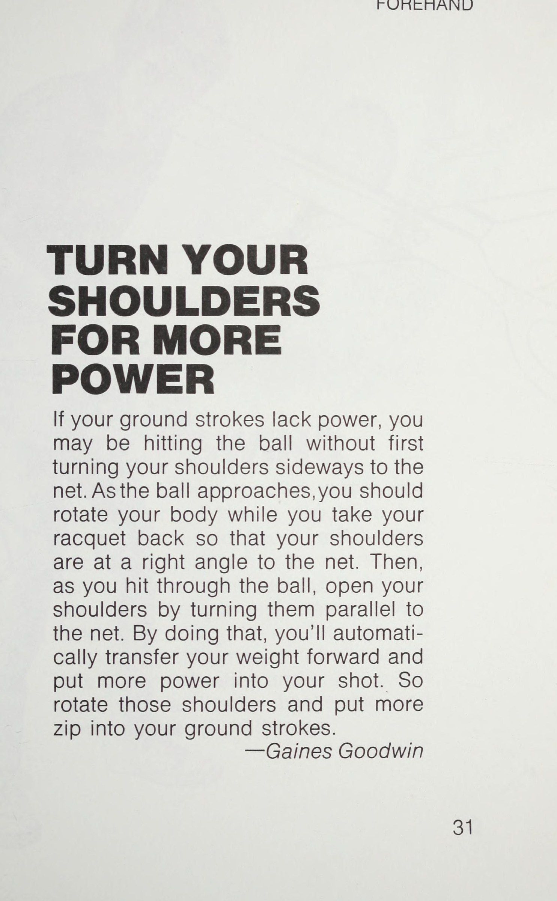
—Gaines Goodwin TAY TAY CẮT GỠ CÁNH XUỐNG CỦA BẠN Không giống như một cú đánh mặt đất thông thường, cú giao bóng trả giao bóng không yêu cầu vung vợt ra sau nhiều. Hãy nhắm tới khoảng một nửa cú vung vợt về phía sau bình thường và sau đó đưa vợt về phía trước để đón bóng ra trước mặt bạn. Quá trình tiếp theo cũng có thể ngắn hơn một chút so với cú chạm đất thông thường. Một cú trả giao bóng tốt đòi hỏi sự tập trung và luyện tập nhiều, nhưng hãy bắt đầu với một cú vung vợt ra sau ngắn hơn và nhớ thực hiện theo.
—Dave Kornreich TIỆN ÍCH BƯỚC RA VÀO LÚC MỘT GIỜ Nếu bạn nhận thấy mình đánh bóng muộn và không thoải mái trong các cú công bóng thuận tay, hãy kiểm tra vị trí của bàn chân trước khi bạn bước thực hiện cú đánh. Bạn nên bước ra ngoài sao cho bàn chân hướng về vị trí 1 giờ.
Điều đó sẽ giúp đảm bảo rằng bạn gặp bóng sớm ở phía trước cơ thể và sẽ cho phép bạn nghiêng người về phía trước một cách thoải mái. Nếu bạn bước ra ở vị trí 3 giờ, bạn không chỉ gặp bóng muộn mà cử động của bạn sẽ cảm thấy chật chội. Hãy đi theo hướng một giờ và bạn sẽ có một cú thuận tay tự do và dễ dàng. —Dave Kozlowski THUẬN TIỆN DI CHUYỂN TIẾN TRÊN BÓNG SÂU Nhiều tay vợt cuối tuần lùi lại với bóng sâu. Kết quả là, họ quên cầm vợt về sớm và họ đánh cú đánh với trọng lượng của họ hướng về phía sau thay vì hướng về phía trước trong cú đánh. Khi một quả bóng được đánh vào bạn, hãy lấy vợt về phía sau trước, xoay người sang một bên để sẵn sàng cho cú đánh và sau đó đánh bóng bằng trọng lượng của bạn di chuyển về phía trước. Đừng lãng phí thời gian sao lưu; hãy lấy vợt về sớm và tiến về phía trước để đánh bóng.
—Rick Tavolacci oT aerenenentbnnaentbarasahassrancnncmnbasevath ĐỂ ĐẦU GỐI CỦA BẠN HOẠT ĐỘNG NHƯ VẬY GIẢM SỐC Một số tay vợt, đặc biệt là những người mới bắt đầu, hiếm khi uốn cong đầu gối khi họ đánh một cú đánh xuống đất. Kết quả là, họ phát triển những cú giật cao, thiếu cả lực và hướng.
Một cách tốt để giúp khắc phục vấn đề này là hãy coi đầu gối của bạn như một bộ bộ giảm xóc lò xo (Shock Absorbers) chịu tác động của việc chuyển trọng lượng về phía trước khi bạn đánh một cú trái tay (Backhand Drive) hoặc thuận tay. Bước về phía quả bóng và cúi xuống sao cho đầu vợt của bạn có thể đánh thẳng vào quả bóng. Chỉ cho phép “bộ bộ giảm xóc lò xo (Shock Absorbers)” đẩy bạn lên trở lại khi bạn hoàn thành cú đánh và bắt đầu thực hiện động tác tiếp theo.
—James E. Shakespeare TAY TAY GIỮ ĐẦU XUỐNG ĐỂ GIÚP CÁC CÚ ĐÁNH XUỐNG Chìa khóa để thực hiện các cú đánh trên mặt đất vững chắc là chuyển trọng lượng của bạn một cách hợp lý từ chân sau sang bóng của chân trước khi bạn vung về phía trước. Để làm điều đó một cách hiệu quả, bạn phải cúi đầu xuống. Nếu bạn ngẩng đầu lên và ra sau khi đánh, trọng lượng của bạn sẽ dồn vào chân sau và bạn có thể sẽ nhấc vợt lên một cách đột ngột - đưa bóng lên trời thay vì bay thẳng qua lưới. Hãy cúi đầu xuống và bạn sẽ ngạc nhiên về sức mạnh truyền vào cú đánh của mình nhờ việc chuyển trọng lượng thích hợp.
—Ben Foster THUẬN TIỆN SỬ DỤNG BÀN CHÂN SAU NHƯ MỘT CHUỘT CHÂN Nếu bạn thường thấy mình mất thăng bằng khi thực hiện các cú đánh trên mặt đất, vấn đề có thể là do bạn đang nghiêng về phía trước quá nhiều bằng bàn chân trước.
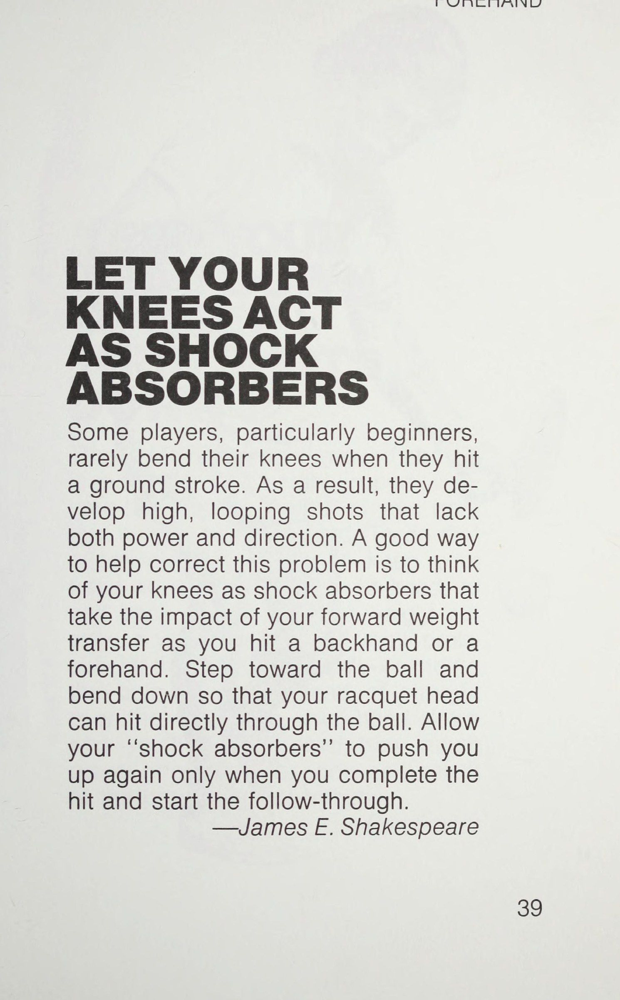
Sau đó, bạn phải đưa chân sau ra xung quanh để giữ thăng bằng. Hãy thử coi bàn chân sau của bạn như một cái mỏ neo phải tiếp xúc với mặt đất trong suốt cú đánh của bạn. Điều đó sẽ ngăn cản bạn nghiêng người quá xa vào cú đánh. Vì vậy, hãy neo chân sau xuống đất để giữ thăng bằng.
—James E. Shakespeare ĐỢI TAY XEM TRỌNG LƯỢNG CỦA BẠN!
Yếu tố quan trọng nhất để đánh bóng tennis tốt là sự phân bổ trọng lượng của bạn tại thời điểm va chạm. Nó phải ở trên chân trước của bạn.
Điều đó giúp bạn theo hai cách: nó truyền thêm lực vào bóng và giúp bạn kiểm soát cú đánh tốt hơn. Ví dụ, trong các cú đánh trên mặt đất, bạn nên bước vào bóng với trọng lượng của mình hướng về phía trước. Nếu không, trọng lượng của bạn sẽ dồn vào chân sau và bóng sẽ có xu hướng bay lên và mất lực. Vì vậy, hãy chơi bóng, đừng để nó chơi bạn. Chuẩn bị nhanh và vung vợt với trọng lượng của bạn hướng về phía trước cùng lúc vợt của bạn tiếp xúc với bóng—Hugh Curtler THUẬN TIẾN ĐỪNG SỢ BÓNG ĐANG LÊN Mặc dù thông thường tốt nhất là bạn nên đánh bóng ở điểm cao nhất của độ nảy của nó, nhưng có một số trường hợp bạn sẽ muốn đánh một quả bóng đang lên. Đi thẳng về phía trước, nhưng hãy chắc chắn đánh bóng bằng mặt vợt thẳng đứng với mặt đất. Đừng nghiêng vợt về phía sau vì bạn cảm thấy điều đó là cần thiết để giúp bóng đi qua lưới. Tất cả những gì có thể làm là đẩy quả bóng lên cao và có thể đưa nó ra ngoài giới hạn.
Tiếp bóng càng chắc chắn càng tốt để vô hiệu hóa bất kỳ xoáy lên nào mà bóng có thể có. Sau đó, đánh xuyên qua quả bóng với mặt vợt thẳng đứng và theo chiều hướng lên cao, cú đánh của bạn sẽ di chuyển sắc nét trên lưới.
—John A. Kraft Jr.
ĐẨY TAY, KHÔNG KÉO VỢT Cũng giống như việc đẩy luôn dễ hơn là kéo một vật nặng, việc đẩy một quả bóng tennis qua một cú đánh cũng dễ hơn là kéo nó. Bạn có thể dồn trọng lượng của mình ra sau vợt và đẩy bóng nếu bạn sử dụng cách cầm vợt thuận tay và trái tay kiểu phương Đông thích hợp.
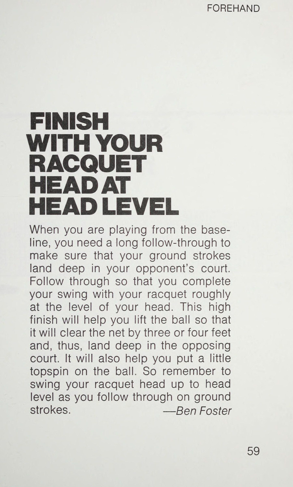
Bằng cách đó, cổ tay của bạn luôn ở phía sau vợt. Và nếu bạn cũng nhớ đón bóng ở phía trước chân trước của mình, bạn sẽ vuốt bóng với ít nỗ lực hơn và chính xác hơn.
—Robert Givone THUẬN TIỆN HÃY tưởng tượng bạn đang đánh bóng bằng lòng bàn tay Nếu bạn gặp khó khăn khi tiếp bóng thẳng trong các cú công bóng thuận tay, hãy tưởng tượng rằng bạn đang cố gắng đánh bóng bằng lòng bàn tay—gần như thể bạn đang chơi bóng ném chứ không phải quần vợt. Lòng bàn tay phải được giữ vuông góc với mặt đất để bạn có thể đánh bóng đúng cách. Và đó cũng là vị trí mà cây vợt của bạn phải ở.
Nếu bạn có cảm giác đánh bóng bằng mặt phẳng của bàn tay, thì bạn sẽ không đánh với mặt nhắm, tức là sẽ đưa bóng vào lưới, hoặc với mặt mở, sẽ đưa bóng ra khỏi sân.
—Don Allen oT EE TAY TAY ĐÁNH BẰNG, KHÔNG BẰNG BÓNG Khi thực hiện các cú đánh trên mặt đất, bạn có thấy rằng các cú đánh của mình thường bay lên không trung không? Rất có thể là bạn đang “thúc đẩy” các cú đánh của mình bằng cách để đầu vợt hạ xuống dưới mức cổ tay của bạn. Kết quả là một hành động hất bóng lên quá xa. Nhớ đánh bóng bằng mặt vợt vuông góc với mặt đất. Bằng cách đó, bạn sẽ đánh dọc theo đường bay của quả bóng và các cú đánh của bạn sẽ đi qua phần trên của lưới một cách suôn sẻ. Giữ đầu vợt của bạn hướng lên và bạn sẽ không đánh trúng được cú đánh của mình.
—Peter Allen THUẬN TIỀN TRONG CÁC CÚ ĐÁNH SÂU, HÃY tưởng tượng BẠN ĐANG ĐÁNH QUA 10 BÓNG Để đánh những cú đánh mặt đất mạnh mẽ và chính xác, bạn nên giữ vợt trên bóng càng lâu càng tốt. Một cách để chắc chắn rằng bạn làm được điều đó là hãy tưởng tượng rằng bạn đang cố gắng tiếp xúc với từng quả trong một hàng gồm 10 quả bóng bắt đầu từ một điểm đối diện với hông trước của bạn. Đánh xuyên qua các quả bóng trên một đường thẳng và kết quả sẽ là một cú thuận tay hoặc trái tay mạnh mẽ, đưa bóng sâu vào phần sân đối phương.
—Ben Foster 2S)
Phần 2: Cú Trái Tay Uy Lực: Một Tay, Hai Tay & Kỹ Thuật Cắt Bóng Slice
Chương 3: Lựa Chọn Vũ Khí: Trái Tay Một Tay Hay Hai Tay?
Chapter 3: Choosing Your Weapon: One-Handed vs Two-Handed Backhand Styles
THỰC HIỆN SẮT RA NGOÀI ĐÓ THEO QUA Các cú đánh mặt đất hiệu quả đòi hỏi phải thực hiện theo dõi lâu dài để kiểm soát bóng chính xác trên vợt của bạn. Để mở rộng khả năng theo dõi của bạn, hãy tưởng tượng rằng cây vợt của bạn đang di chuyển trên một đường dọc theo đầu bàn ủi khi bạn đưa bóng về phía sân bên kia. Cố gắng đánh xuyên qua quả bóng, giữ vợt tiếp xúc cho đến khi cú đánh của bạn chạm tới điểm cuối của bảng tưởng tượng. Đối với mỗi cú thuận tay (Forehand Drive), hãy hướng đầu bàn ủi của bạn theo hướng bạn muốn đánh bóng và đảm bảo rằng cú đánh tiếp theo của bạn tiếp tục theo hướng đó.
—Dave Woods OME a aiapiatllttyilbirrrat KẾT THÚC THUẬN TAY BẰNG ĐẦU VỢT CỦA BẠN Ở CẤP ĐẦU Khi bạn chơi từ đường cuối sân, bạn cần theo dõi lâu dài để đảm bảo rằng các cú đánh tiếp đất của bạn tiếp đất sâu trong phần sân của đối thủ.
Thực hiện theo để bạn hoàn thành cú vung vợt của mình bằng vợt gần ngang đầu bạn. Cú dứt điểm cao này sẽ giúp bạn nhấc bóng lên để nó đi qua lưới ba hoặc bốn feet và do đó, chạm sâu vào phần sân đối phương. Nó cũng sẽ giúp bạn tạo ra một chút xoáy lên trên quả bóng. Vì vậy, hãy nhớ vung đầu vợt của bạn lên ngang đầu khi bạn thực hiện các cú đánh trên mặt đất.
—Ben Foster og ead ee BT eeT Pr een en ren ee en een eee ern Hoặc rr a SERBan te LRSSSGSRSERDERORS Nhãn chiều Peaeod Gsdndanesanaee!
euasenanaeanay: aaneaeae ttt RARRERRas) Beaneeeasi, Lhd dd adedabebudedt Titi relia NSRTRSERt Gaganses) pasegeasl esaaeecn Sateaeesan!
Littiiiiin iianaaeat HH ates oh Beeeaeas, teenaane Trt ttt ne $5 eee eee THUẬN THỨC NHƯ BÓNG VÀ TRÊN LƯỚI Đừng sợ đánh một cú chạm đất khiến bóng bay khá cao qua lưới—có lẽ cao tới 5 feet. Đánh bóng cao hơn không chỉ làm giảm cơ hội bóng đi vào lưới mà còn đưa bóng sâu hơn vào phần sân sau của đối phương. Đối với độ cao, cú vung về phía trước phải bắt đầu dưới mức mà bóng sắp đánh. Lượt theo dõi sẽ kết thúc ở vị trí cao hơn, thường là phía trên đầu tay vợt. Đừng vung vợt xuống nếu không bạn sẽ buộc phải kéo lên khi thực hiện cú đánh tiếp theo.
Bắt đầu ở mức thấp và kết thúc ở mức cao.
—John M. Brownlow F pig THỰC HÀNH MỤC TIÊU THUẬN TIỆN ĐỂ TẠO TAY THUẬN TIỆN CỦA BẠN Nếu bạn mới bắt đầu chơi quần vợt, một trong những điều đầu tiên của bạn là học cách đánh một cú thuận tay (Forehand Drive) thẳng về phía trước.
Việc thực hành mục tiêu này sẽ giúp ích cho bạn. Nếu bạn thuận tay phải, hãy đứng giữa vị trí B và C và đánh vào bảng sau để nhắm mục tiêu C. Nếu bạn làm đúng, bóng sẽ bật lại về phía thuận tay của bạn. Đừng cố luân phiên đánh thuận tay và đánh trái tay vào bảng sau cho đến khi bạn đã thực hiện hoàn toàn cả hai cú đánh.
—Các biên tập viên A i;
CÚT TRÁI TRÊN ĐẤT ẨN VỢT CỦA BẠN KHI BẠN CHUẨN BỊ Khi bạn chuẩn bị đánh một cú công bóng thuận tay hoặc trái tay, bạn nên thu vợt lại cho đến khi nó gần như được ẩn hoàn toàn khỏi đối thủ. Nó phải hướng vào hàng rào ngay phía sau bạn để vợt, cơ thể bạn và đối thủ của bạn đều nằm trên một đường thẳng. Nếu đối thủ của bạn có thể nhìn thấy cây vợt của bạn ở phía trước cơ thể bạn khi bạn cầm vợt hết cỡ, thì cú đánh lùi của bạn quá ngắn; nếu đối thủ của bạn có thể nhìn thấy vợt của bạn ở phía sau lưng bạn thì cú vung vợt ra sau của bạn quá dài.
—Ben Foster 6/7 x tuần: bạn?
oe SPS RS Ray, ESP Xem KIẾM RÚT TRÁI ĐỂ BẮT ĐẦU BÓNG TRÁI Để đánh một cú trái tay mạnh, bạn phải xoay hoàn toàn phần thân trên của mình trong cú vung về phía trước Để dồn lực vào cú đánh và dồn trọng lượng của bạn di chuyển về phía trước. Để làm điều đó, hãy tưởng tượng rằng bạn đang rút một thanh kiếm ra khỏi bao khi bạn bắt đầu vung kiếm về phía trước. Kéo vợt về phía trước một cách nhẹ nhàng và xoay vai dẫn đầu của bạn lại. Bằng cách đó, phần thân trên của bạn sẽ xoay và trọng lượng của bạn sẽ bắt đầu di chuyển về phía trước.
—Mike Ratcliff
Chương 4: Bí Quyết Cú Trái Tay Một Tay Hoàn Hảo
Chapter 4: Perfecting the One-Handed Backhand: Draw the Sword Motion
BACKTAY VÀO KHUỶU TAY CỦA BẠN ĐỂ CÓ KIỂM SOÁT BACK HAY Nếu cú trái tay của bạn thất thường, bạn có thể đánh bóng quá xa cơ thể. Bạn có thể giảm xu hướng đó bằng cách sử dụng động tác xoay người ra sau gọn hơn với cánh tay gập lại và khuỷu tay gần cơ thể hơn. Để kiểm tra xem khuỷu tay của bạn chỉ cách cơ thể hai hoặc ba inch hay không, hãy tập động tác vung vợt sau với một quả bóng tennis kẹp dưới cánh tay. Nếu bóng rơi ra ngoài trong quá trình vung vợt ra sau thì bạn đang duỗi thẳng cánh tay của mình quá nhiều. Với khuỷu tay khép lại và cánh tay uốn cong trong cú đánh sau, cú vung về phía trước của bạn sẽ gần cơ thể hơn để bạn đánh mạnh hơn và kiểm soát tốt hơn.
—Ben Foster BACKHAND GIỮ LƯNG LƯNG VÀO TƯỜNG ĐỂ CÓ BACK TAY TỐT HƠN Nhiều tay vợt có cú trái tay yếu vì họ đập bóng bằng các cú đánh vòng tròn thay vì vung trên một đường thẳng về phía mục tiêu. Nếu đó là vấn đề của bạn, hãy tưởng tượng rằng bạn đang đứng quay lưng vào tường và đánh bóng dọc theo một đường song song với bức tường đó. Hãy vung vợt mà không chạm vào bức tường tưởng tượng bằng tay vợt của bạn. Điều đó sẽ buộc bạn phải đưa vợt về phía sau không quá mức cần thiết, sẽ ngăn bạn mở vai quá sớm và sẽ khiến bạn đưa vợt về phía trước trên một đường đi bằng phẳng bằng cách sử dụng phần trên cơ thể, vai và cánh tay. Kết quả sẽ là những cú đánh chắc chắn, trái tay chính xác.
—Andy Brandi BACKH HÃY ĐỂ VAI CỦA BẠN CHỈ ĐỊNH CÁCH SỨC MẠNH TRÊN BÁC TRÁI CỦA BẠN Trong cú trái tay (Backhand Drive), cơ thể có thể cản trở một cú đánh lùi đầy đủ, thích hợp, từ đó, đặt ra giới hạn về mức sức mạnh bạn có thể nhận vào cú đánh. Bạn có thể kéo dài động tác vung vợt về phía sau và do đó tăng sức mạnh của mình chỉ bằng cách xoay vai khi thu vợt về phía sau. Xoay cơ thể cho đến khi vai trước hướng về điểm tiếp xúc. Bạn sẽ đảm bảo cú vung vợt về sau dài hơn và cú trái tay (Backhand Drive) mạnh hơn.
—Rick Tavolacci TRÁI TAY XEM BÓNG CHO ĐẾN KHI BẠN NGHE ĐƯỢC NÓ ĐÁNH Bạn gặp vấn đề về tính toán thời gian đánh? Hãy thử quan sát bóng cho đến khi bạn nghe thấy nó chạm vào dây vợt. Nhiều tay vợt nghĩ rằng họ đã theo dõi bóng suốt chặng đường để tác động nhưng trên thực tế, họ thường rời mắt khỏi nó ở khoảng cách 15 đến 20 inch khi tiếp xúc. Kết quả là một cú đánh kém. Vì vậy, hãy quan sát quả bóng cho đến khi bạn nghe thấy nó chạm vào dây và bạn sẽ thường đánh bóng chắc chắn và chính xác.
—Doug Elgin UA: ee ————————rn ——— BACKHAND LÀM CHẬM CÚ ĐU CỦA BẠN ĐỂ CÓ SỨC MẠNH ĐẤT Nhiều tay vợt mới bắt đầu vung vợt quá mạnh khi đánh các cú đánh trên mặt đất.
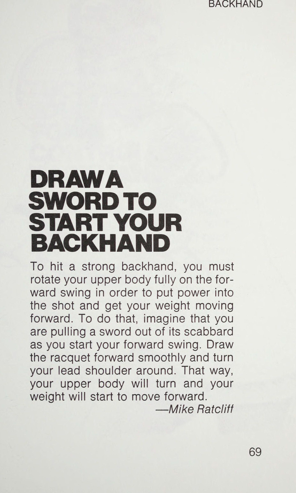
Những cú xoay người hoang dã này thường dẫn đến những cú đánh lệch tâm với hướng kém và thiếu lực. Hãy thử làm chậm cú vung của bạn để bạn đánh xuyên qua quả bóng một cách rõ ràng.
Một cú vung vợt mượt mà sẽ giúp bạn đánh bóng vào giữa vợt, tạo ra cú đánh mạnh hơn và giúp bạn tránh bị căng cơ khuỷu tay. Một cú swing chậm hơn, mượt mà hơn cũng sẽ là một cú swing thoải mái hơn và kết quả là bạn sẽ có một cú đánh ổn định hơn.
—Flip LoGuidice iii ee BACKHAND GIỮ CÁNH TAY KHÁC CỦA BẠN Ở BÊN MẠNG ĐỂ CÓ BACK TAY TỐT HƠN Bạn có xu hướng xịt trái tay của mình khắp sân không? Vấn đề có thể không liên quan gì đến cú vung vợt của bạn. Có vẻ đáng ngạc nhiên, nguyên nhân có thể nằm ở cánh tay không cầm vợt của bạn. Nếu bạn vẫy cánh tay đó quá nhiều, bạn có thể buộc cơ thể phải mở (xoay về phía lưới) trước khi cần thiết.
Và điều đó có thể sẽ khiến bạn kéo bóng rộng hoặc ngắn. Giải pháp là giữ cánh tay còn lại ở bên cạnh khi bạn vung gậy. Điều đó sẽ buộc bạn phải nằm nghiêng về phía lưới trong hầu hết các cú swing. Kết quả sẽ là khả năng kiểm soát và định hướng tốt hơn. Bạn thậm chí có thể đút tay kia vào túi cho đến khi bạn có thói quen giữ cánh tay kia ở bên mình.
—Dave Kozlowski vung tay trái ở những cú trái tay (Backhand Drive) bằng cú ném FRISBEE Chuyển động của cánh tay khi thực hiện cú trái tay gần như giống hệt như động tác ném đĩa nhựa. Để ném Frisbee, bạn nên đứng nghiêng về phía mục tiêu, thu cánh tay lại gần cơ thể, vung thẳng cánh tay về phía trước và thả Frisbee ra phía trước cơ thể. Đầu gối của bạn giữ nguyên và cơ thể bạn xoay khi thực hiện cú ném. Nếu bạn là người ném đĩa thành thạo, bạn cũng sẽ phải mất một thời gian dài theo dõi để có được hướng đi đúng đắn.
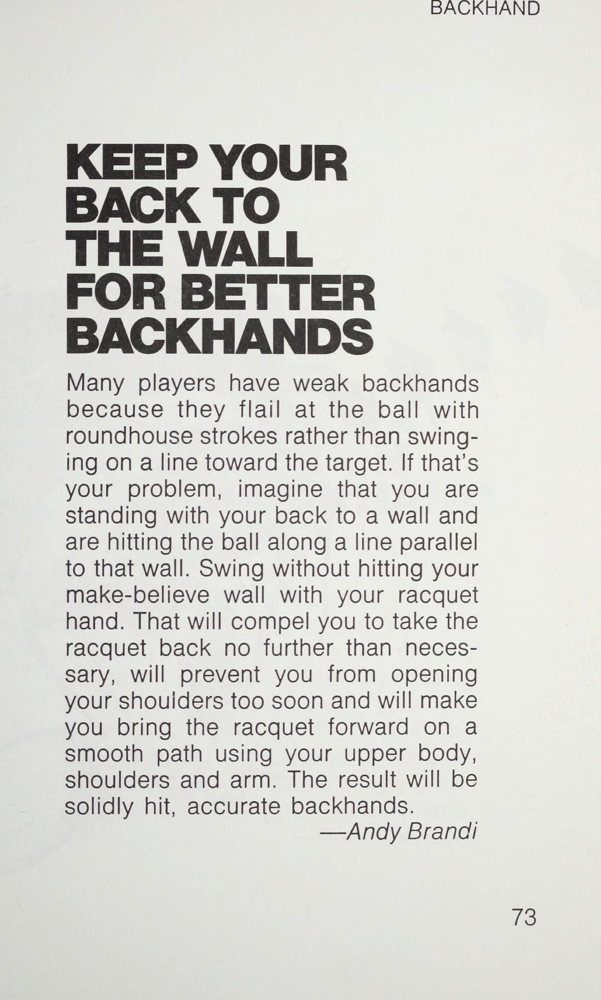
Hãy thử động tác thả lỏng của cú ném Frisbee trên trái tay của bạn và bạn sẽ thấy rằng nó sẽ giúp bạn giữ khuỷu tay của bạn gần với cơ thể (làm cho cánh tay của bạn ít bị căng hơn) và sẽ giúp đưa vợt của bạn ra phía trước nơi cần thiết để thực hiện một cú đánh sạch sẽ, đúng lúc.
—Dave Engleberg TRÁI TAY CHƠI TUG-OF-WAR TRÊN TRÁI TAY CỦA BẠN Nếu trái tay của bạn thiếu lực, rất có thể là bạn không dồn trọng lượng vào cú đánh. Một cách để khắc phục vấn đề đó là hãy tưởng tượng rằng bạn đang tham gia vào một trò chơi kéo co và tay cầm vợt của bạn chính là sợi dây mà bạn đang kéo từ phía sau.
Khi kéo, bạn sẽ nghiêng về phía trước, đẩy trọng lượng của bạn ra khỏi bàn chân sau và thực hiện cú đánh. Động tác này cũng sẽ giúp bạn giữ khuỷu tay trong và thẳng để đánh xuyên qua quả bóng thay vì tát vào nó bằng một chuyển động mạnh. Đặt trọng lượng của bạn vào tay sau như thể bạn đang tham gia một trò chơi kéo co và bạn sẽ tạo thêm lực kéo cho các cú đánh của mình.
—Rick Halpine
Chương 5: Kỹ Thuật Cắt Bóng Backhand Slice: Lá Chắn Thép
Chapter 5: Backhand Slice Mechanics: Knife-edge Precision and Defensive Wall
—————_ BẰNG TRÁI VỢI ĐỂ NHẮC MỤC TRÁI CỦA BẠN Nếu bạn gặp khó khăn trong việc kiểm soát hướng đánh trái tay của mình, có thể hữu ích nếu bạn tưởng tượng rằng bạn đang ném vợt sau khi bóng đi. Khi bạn đã đánh xong, hãy đi theo hướng bạn muốn bóng đi. Hãy nghĩ đến việc ném vợt của bạn dọc theo đường đó. Nhưng tất nhiên là đừng thực sự buông tay! Hành động ném sẽ hướng cánh tay và vợt của bạn đến vị trí bạn muốn bóng đi và bạn sẽ thấy nó đi theo đường thẳng đến vị trí đó.
Tuy nhiên, đừng dừng chuyển động của bạn sau khi ném. Hãy để vợt chạy chậm lại một cách tự nhiên cho đến khi bạn đạt đến điểm cuối của cú đánh theo đà hoàn chỉnh. Hãy nhớ mô phỏng động tác ném ngay sau khi va chạm và bạn sẽ sớm có được cú trái tay (Backhand Drive) chính xác.
—Steve Greenberg BACK HAY LÀ BACK HAY CỦA BẠN CHO BIRDS?
Nếu cú trái tay của bạn có vẻ bị giật, hãy kiểm tra xem liệu bạn có đang vỗ bàn tay còn lại của mình không.
Nếu bàn tay của bạn bay lên không trung khi thực hiện cú đánh, nó sẽ khiến bạn phải kéo toàn bộ cơ thể lên và cú đánh sẽ mất đi tính linh hoạt. Hãy thử tập vài cú đánh xem tay bạn có vung vẩy không mục đích hay không. Nếu vậy, hãy cố gắng giữ tay còn lại ở vị trí thăng bằng phía sau cơ thể. Bàn tay còn lại đó không phải để vỗ mà là để giúp bạn giữ thăng bằng. Loại bỏ nắp và bạn sẽ khôi phục lại độ mượt cho nét vẽ của mình.
—Doug MacCurdy —— TAY TRÁI SỬ DỤNG CÁNH TAY KHÁC NHƯ NGƯỜI ĐI TIGHTROPE. Giống như người đi trên dây sử dụng cả hai tay để giữ thăng bằng, tay vợt quần vợt nên sử dụng cánh tay không cầm vợt làm đối trọng. Ví dụ, trong cú công bóng thuận tay, hãy duỗi cánh tay còn lại của bạn về phía bóng khi bạn thu vợt lại. Khi bạn bắt đầu di chuyển vợt về phía trước, cánh tay kia sẽ xoay xung quanh với cùng tốc độ theo cùng một hướng để giúp bạn giữ thăng bằng trong suốt cú đánh.
Bạn cũng có thể sử dụng cánh tay không cầm vợt của mình để giữ thăng bằng khi ở trên lưới và khi di chuyển để đánh một cú.
—Lee Draisin BACKHAND GIỮ TRỌNG LƯỢNG CỦA BẠN TRƯỚC Nếu các cú trái tay (Backhand Drive) của bạn thiếu kiểm soát, bạn có thể dồn quá nhiều trọng lượng lên gót chân khi thực hiện cú đánh này.
Hầu hết tay vợt đều có xu hướng duỗi thẳng chân và ngửa đầu ra sau một cách tự nhiên khi hoàn thành cú đánh.
Nhưng sai rồi. Trọng lượng của bạn phải dồn vào chân trước khi bạn đánh bóng và thực hiện cú đánh tiếp theo. Cách để đạt được điều đó là cúi đầu xuống và giữ đầu gối cong. Việc cúi đầu xuống sẽ tự động dồn trọng lượng vào vị trí cần thiết—ở bàn chân trước.
—Hugh Curtler eR Qari i ian * aa BACKHAND FREES KHI BẠN KẾT THÚC CÚT CỦA MÌNH Bạn có gặp khó khăn với việc theo dõi của mình không? Lần tới khi bạn tập luyện, hãy dừng chuyển động khi bạn hoàn thành cú đánh của mình. Có thể bạn sẽ thấy rằng mình chỉ theo dõi được một phần và đó là lý do tại sao bạn không nhận được hướng đi đúng đắn cho các cảnh quay của mình. Khi bạn cố định cú trái tay hoặc thuận tay của mình, cú đánh tiếp theo phải càng xa về phía trước càng tốt với đầu vợt hướng lên trên không. Nếu bạn dừng lại quá sớm, bạn sẽ phải kéo dài thời gian theo dõi. Ngay cả khi bạn chơi, bạn vẫn có thể dừng lại trong giây lát để kiểm tra hành động tiếp theo của mình.
—Frank B. Walker ——— ĐÁNH TRÁI VÀ CHẠY TRÊN SÂN Đừng chỉ đứng xung quanh để chiêm ngưỡng cú đánh của bạn sau khi bạn đánh bóng—hãy di chuyển! Ngay sau khi bạn hoàn thành cú đánh của mình, hãy bắt đầu chạy. Đó là một cú đánh hiếm hoi trong quần vợt mà không nên theo sau một số động tác chân nhanh.
Thông thường, bạn sẽ cần phải chạy trở lại vị trí ở giữa sân nếu bạn đang ở cuối sân hoặc để thực hiện một cú trả bóng theo góc nếu bạn đang ở trên lưới. Hoặc bạn có thể muốn chạy lên lưới để thực hiện cú đánh tiếp cận hoặc lùi lại để che chắn cho cú đánh dự kiến. Dù trong hoàn cảnh nào, đừng chỉ đứng đó. Di chuyển!
—Ben Foster ay fy
Phần 3: Quả Giao Bóng Bùng Nổ & Cú Bắt Volley Sắc Lẹm Trên Lưới
Chương 6: Giải Mã Cú Giao Bóng: 4 Nút Thắt Quyết Định Tốc Độ
Chapter 6: Decoding the Serve: Toss Release, Backscratch Drop, and Pronation
NHẢ BÓNG TRƯỚC KHI BẠN PHÁT PHÁT Nếu bạn chưa nảy bóng một hoặc hai lần trước khi giao bóng, bạn nên bắt đầu thực hiện việc đó. Cú nảy giúp bạn xây dựng sự tập trung cho cú giao bóng bằng cách thay đổi trọng tâm từ điểm cuối cùng được chơi—hành động theo chiều ngang—sang tung bóng và vung giao bóng—chuyển động theo chiều dọc. Quả bóng sẽ nảy lên gần đúng điểm mà nó sẽ chạm đất nếu nó được ném đúng và rơi xuống mà không bị đánh trúng. Điều đó sẽ buộc bạn phải dồn trọng lượng cơ thể lên bàn chân trước để có một khởi đầu thích hợp cho những chuyển dịch suôn sẻ của trọng lượng cơ thể, điều này sẽ mang lại cho bạn một cú giao bóng mạnh mẽ.
—Mary P. Johnson PHỤC VỤ PHỤC VỤ SÁNG CHÂN CỦA BẠN ĐỂ CÓ SỨC MẠNH PHỤC VỤ Nếu cú giao bóng của bạn thiếu tính nhất quán và sức mạnh, bạn có thể đang đứng với hai chân quá gần nhau. Nếu hai chân không tách ra, bạn sẽ có xu hướng khuỵu gối, điều này sẽ dẫn đến chuyển động giật và không nhất quán. Bạn cũng sẽ không thể dồn trọng lượng của mình vào cú giao bóng để có được sức mạnh tối đa. Cách chữa là đứng với đôi chân dang rộng hơn vai một chút — hoặc cách nhau khoảng một cây vợt. Khi dang rộng bàn chân, cú giao bóng của bạn sẽ trôi chảy hơn vì bạn có thể đá trở lại để Bắt đầu chuyển động và sau đó chuyển trọng lượng của mình về phía trước để dồn lực vào cú đánh.
—dJim Burns PHỤC VỤ TRÊN DÒNG ĐỂ CÓ PHỤC VỤ TỐT HƠN Bạn gặp khó khăn khi đặt giao bóng?
Kiểm tra vị trí bàn chân của bạn khi bạn chuẩn bị giao bóng. Một đường tưởng tượng cắt ngang đầu ngón chân của cả hai đôi giày của bạn sẽ chỉ dọc theo đường bay dự định của quả bóng. Giữ hai chân của bạn rộng bằng vai và kiểm tra vị trí của chúng mỗi khi bạn giao bóng. Đảm bảo rằng đường ngang các ngón chân hướng vào mục tiêu của bạn trong hộp dịch vụ.
—Susan Riebel hOS PHỤC VỤ HẤP DẪN TRƯỚC KHI BẠN BẮT BUỘC PHỤC VỤ CỦA MÌNH Không có phần nào của cú giao bóng khó thành thạo hơn cú tung bóng. Nhưng bạn có thể phát triển tính nhất quán cần thiết trong cú ném của mình nếu bạn tuân theo thói quen này. Trước khi bắt đầu ném bóng, hãy giữ bóng và vợt trước mặt bạn rồi nhìn thẳng vào sân giao bóng; đầu, cánh tay của bạn và mục tiêu bây giờ đều thẳng hàng.
Khi bạn nhấc cánh tay lên để ném, hãy giữ nó ở đường thẳng này. Cách ném bóng chính xác cho một cú giao bóng phẳng hoặc xoáy phải đặt quả bóng khoảng sáu inch đến một foot phía trước cánh tay đánh của bạn. Nếu cú ném không thẳng hàng trước cánh tay đánh của bạn, hãy bắt nó và thử lại.
—Ben Foster LILI I IAT fo (LLL Li Lshkuibulunflanfupibidl THẢ BÓNG Ở ĐẦU TẦM TAY CỦA BẠN Nhiều tay vợt gặp khó khăn với cú giao bóng của họ vì họ không tiếp xúc với bóng ở cùng một vị trí mỗi lần. Sự khác biệt trong cách đánh này phần lớn là do cú ném không đều. Tung bóng đến cùng một vị trí và độ cao mỗi lần và bạn sẽ thấy rằng bạn sẽ có được cú giao bóng ổn định hơn. Bí quyết của một cú giao bóng chính xác tung bóng là thả bóng ở vị trí cao nhất trong tầm với của bạn. Giữ bóng bằng các đầu ngón tay và khi cánh tay của bạn duỗi ra hoàn toàn, hãy thả bóng bằng cách nhẹ nhàng mở các ngón tay của bạn. Nếu bạn đợi để thả bóng ở vị trí cao nhất trong tầm với của mình, bạn sẽ phát triển tính nhất quán trong cú ném của mình. Và điều đó sẽ mang lại cho bạn cú giao bóng chính xác hơn.
—Chuck Morrison PHỤC VỤ AOR IS SES OEE Pe Ce) a ee re Se Re tae oS oe ee ee F oe Oe PHỤC VỤ HOÀN HẢO CHO BÓNG CỦA BẠN Ở hầu hết mọi cấp độ quần vợt, lý do giao bóng kém thường có thể bắt nguồn từ kỹ thuật tung bóng bị lỗi. Nếu bóng đi đến những điểm khác nhau mỗi lần thì không thể phát triển được một cú giao bóng nhất quán.
Tất nhiên, cần phải thực hành để khắc phục vấn đề. Và thông thường, tốt nhất, đặc biệt là đối với những người mới bắt đầu, nên tránh xa sân tập để tập trung vào việc tung bóng chứ không phải vào vị trí bóng được đánh.
tôi đề nghị đứng nghiêng cách tường khoảng một sải tay.
Thực hành ném bóng lên song song với tường đến độ cao bằng đầu vợt khi nó được giơ lên với cánh tay dang rộng hoàn toàn. Giữ nó cho đến khi quả bóng được ném vào cùng một vị trí mỗi lần. Tất cả sẽ được đền đáp trên sân.
—John Brownlow PHỤC VỤ TỚI BẦU TRỜI KHI THẢ BÓNG Nếu bạn có một cú giao bóng yếu và thường xuyên đi vào lưới, nguyên nhân của vấn đề có lẽ là do động tác giao bóng chật chội. Khả năng cao là bạn không nhấc bóng lên đủ cao trước khi đánh nó. Cách để khắc phục vấn đề là giữ cho tay bóng của bạn hướng lên sau khi bạn thả bóng. Khi bạn quan sát quả bóng bay lên, bạn cũng sẽ thấy bàn tay bóng của bạn vươn lên trời ngay trước khi bạn đặt nó xuống cạnh cơ thể để đưa nó ra khỏi vợt. Vươn lên trời sẽ giúp bạn đặt bóng cao hơn và do đó điều chỉnh chuyển động giao bóng chật chội đó.
—Denny Lewis PHỤC VỤ TRÌ HOÃN cú tung của bạn để có một cú giao bóng hoàn toàn= CHUYỂN ĐỘNG CÀO Nếu bạn không đặt đầu vợt xuống sau lưng ở tư thế gãi lưng rơi vợt (Backscratch Drop) như khi bạn giao bóng, điều cần làm là thả bóng muộn hơn một chút. Bằng cách trì hoãn cú ném của bạn, bạn sẽ cho cánh tay giao bóng của mình thời gian để lấy lại vợt đúng cách và sau đó bạn sẽ có thể đưa vợt lên cao để thực hiện một cú giao bóng mạnh mẽ.
khuyên bạn nên trì hoãn việc ném bóng cho đến khi vợt của bạn bay ra sau đầu bạn. Sau đó, bạn có thể thả bóng, hoàn thành cú vung vợt ngược và cuối cùng, đưa vợt lên cao để thực hiện cú giao bóng.
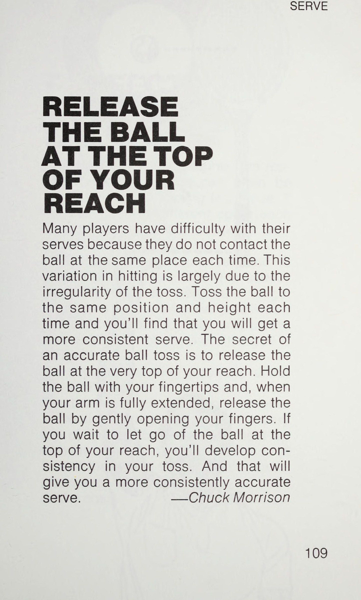
—Juan Rios Lt BOO Whe oo GÀO LƯNG ĐỂ CÓ MỘT CUỘC PHÁP MẠNH Nếu cú giao bóng của bạn có vẻ thiếu lực và bạn gặp khó khăn trong việc căn thời gian đánh, có thể bạn đã đưa vợt lùi chưa đủ xa. Thả đầu vợt xuống phía sau lưng trước khi bạn vung vợt về phía trước để đánh bóng. Nếu bạn đặt vợt ở tư thế được gọi là tư thế gãi lưng rơi vợt (Backscratch Drop), bạn sẽ có thể tăng tốc đầu để có một cú đánh mạnh mẽ.
Và việc gãi lưng rơi vợt (Backscratch Drop) sẽ khiến bạn không thể di chuyển vai quá sớm, gây mất kiểm soát.
—Silas Everett PHỤC VỤ Alig PHỤC VỤ CHÂN TRƯỚC CỦA BẠN KHI BẠN PHÁT PHÁT Để dồn bất kỳ sức mạnh thực sự nào vào cú giao bóng của mình, bạn phải chuyển trọng lượng của mình về phía trước khi tiếp xúc với bóng. Một cách đáng tin cậy để làm điều đó là nhớ giữ chân trước của bạn cố định vào sân khi bạn giao bóng. Bằng cách đó, bàn chân trước của bạn có thể nhận được trọng lượng của cơ thể khi nó được chuyển về phía trước trong quá trình giao bóng. Với bàn chân trước được cố định, bạn có thể nhấc chân sau lên và vung về phía trước khi trọng lượng của bạn di chuyển. Điều đó cũng sẽ giúp bạn di chuyển nếu bạn định sạc mạng.
Tuy nhiên, hãy giữ chân trước cố định cho đến khi bạn đánh bóng.
—Ben Foster Th HƯỚNG VỢT CỦA BẠN LÊN TRẦM TRỜI ĐỂ CÓ MỘT PHỤC VỤ ĐIỆN Để có được sức mạnh tối đa từ cú giao bóng của bạn mà không bị thương ở vai hoặc cánh tay, hãy nhớ đưa vợt về phía sau và thả đầu cho đến khi đầu cán vợt hướng lên trời.
Khi ở vị trí đó, vợt của bạn sẽ ở tư thế gãi lưng rơi vợt (Backscratch Drop) thích hợp và cổ tay của bạn sẽ cong lên để bắt đầu cú vung về phía trước. Bằng cách đó, bạn sẽ có thể thực hiện được một cú xoay người mạnh và cú búng cổ tay khỏe mạnh khi đánh bóng. Vì vậy, việc hướng cán vợt của bạn lên trời sẽ giúp bạn tăng thêm sức mạnh cho cú giao bóng của mình.
—Rick Halpine PHỤC VỤ Za PHỤC VỤ NÂNG CẤP PHỤC VỤ CỦA BẠN ĐỂ CÓ NHIỀU SỨC MẠNH hơn Nếu cú giao bóng của bạn thiếu sức mạnh thực sự, lý do có thể là do bạn không đặt trọng lượng của mình vào nó đúng cách. Để làm điều đó, hãy đẩy ra khỏi chân sau khi bạn đưa vợt lên khi giao bóng sao cho khi tiếp xúc, bạn nghiêng người vào sân. Khi đánh bóng, bạn gần như rơi xuống sân với cơ thể duỗi thẳng từ mắt cá chân đến đầu vợt. Đừng cúi người ở thắt lưng vì điều đó sẽ không dồn trọng lượng cơ thể vào cú đánh. Nghiêng người về phía trước với cơ thể duỗi thẳng hoàn toàn khi bạn đánh bóng.
—Paul M. Nemecek PHỤC VỤ ĐO LƯỜNG ĐIỂM TIẾP XÚC CỦA BẠN ĐỂ CẢI THIỆN PHỤC VỤ CỦA BẠN Bất cứ khi nào cú giao bóng của bạn trở nên thất thường, hãy kiểm tra để chắc chắn rằng bạn đang nâng bóng đến điểm tiếp xúc thích hợp. Để tìm ra vị trí đó, bạn chỉ cần vung vợt lên vị trí mà bạn thường đánh bóng. Bạn nên vươn người với tư thế cơ thể duỗi thẳng và cánh tay duỗi thẳng hoàn toàn. Nhìn vào giữa dây vợt của bạn.
Đó là nơi bóng sẽ ở khi bạn đánh nó. Hãy ghi nhớ hình ảnh của điểm tiếp xúc đó và thả bóng để nó đạt đến độ cao đó.
—Rick Tavolacci PHỤC VỤ Đánh BÓNG KHI NÓ DỪNG Nếu bạn đã thành thạo nghệ thuật ném bóng đến độ cao thích hợp để giao bóng, hãy thử và đánh bóng ở đỉnh cao của đường bay. Khi đạt đến đỉnh điểm, quả bóng sẽ dừng lại trong giây lát trước khi bắt đầu rơi xuống.
Bạn sẽ thấy rằng việc đánh bóng vào giữa vợt sẽ dễ dàng hơn nhiều khi bóng không chuyển động. Đừng đánh một quả bóng đang chuyển động trừ khi bạn không có lựa chọn nào khác.
—Dennis J. Konicki PHỤC VỤ CỔ TAY CỦA BẠN NHƯ NGƯỜI BÓNG KHI BẠN PHÁT GIAO Ngay trước khi đánh bóng trong cú giao bóng của mình, bạn nên búng cổ tay về phía trước giống như người ném bóng khi ném bóng chày. Việc buộc cổ tay sẽ giúp cú giao bóng của bạn có thêm lực kéo và giúp tạo độ xoáy cho bóng. Khi bạn búng cổ tay, bạn có thể xoay nhẹ lòng bàn tay để giúp bạn nhắm bóng. Nó sẽ đi theo hướng lòng bàn tay chỉ. Để có sức mạnh tối đa, hãy tiếp tục thực hiện cú bắt bóng thông qua phần tiếp xúc với bóng và theo hướng tiếp theo. Nếu bạn gặp khó khăn trong việc cảm nhận lực giật cổ tay, hãy thử ném bóng vài lần trước khi giao bóng.
—Raymond Yost Wes) GIAO DỊCH TÌM KIẾM ĐỂ PHÁT PHÁP CỦA BẠN SẼ KHÔNG XUỐNG Có nhiều cú giao bóng của bạn đập vào lưới một cách vô hại không? Nếu đúng như vậy thì nguyên nhân có thể là do bạn đang cúi đầu xuống khi gặp bóng. Điều đó có nghĩa là bạn không thể theo dõi quả bóng, cơ thể bạn bị cong quá sớm ở thắt lưng, cổ tay của bạn bị gãy quá sớm và bạn đang đánh mất thăng bằng. Vì vậy, hãy nhớ ngẩng cao đầu và nhìn vào quả bóng khi bạn giao bóng. Bạn sẽ đạt được độ chính xác và sức mạnh cao hơn vì bạn sẽ đánh bóng bằng cánh tay thẳng và cơ thể duỗi thẳng hoàn toàn.
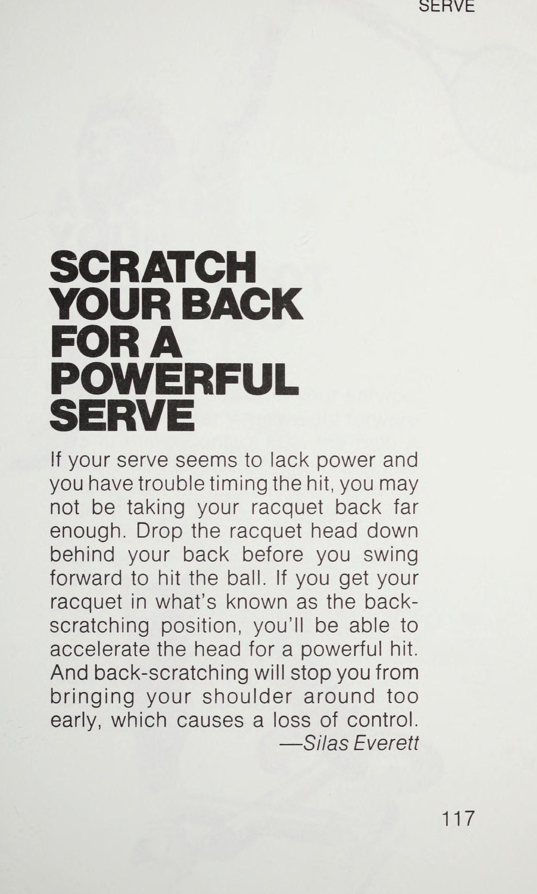
—Gregg Kail ~oe PHỤC VỤ NÉM VỢT ĐỂ PHÁT PHÁP SÂU HƠN Nếu bạn gặp khó khăn khi thực hiện cú giao bóng qua lưới, đây là điều bạn có thể thử trong thực tế và có thể hữu ích.
Thay vào đó hãy ném vợt của bạn qua. Tốt nhất bạn nên sử dụng cái cũ nếu có thể và tránh làm điều đó khi có người khác trên sân. Có thể bạn sẽ thấy rằng vợt sẽ chạm đất ở phía trước lưới trong lần thử đầu tiên, cho thấy rằng bạn đang kéo đầu hoặc vợt xuống - hoặc cả hai.
Ném vợt lên và ra ngoài, bạn sẽ sớm thấy rằng nó sẽ lướt qua lưới. Bây giờ, hãy sử dụng chuyển động tương tự với cú giao bóng thông thường của bạn và bạn sẽ có một chuyển động dễ dàng đưa bóng đi sâu một cách nhất quán.
—Sean Sloane PHỤC VỤ THEO ĐỂ CÓ MỘT CUỘC PHÁP PHÁT MẠNH Bạn sẽ có một cú giao bóng mạnh chỉ nếu bạn sử dụng một cú vung hoàn toàn với một cú đánh theo sau hoàn chỉnh khiến vợt quét về phía sân đối thủ và đi xuống qua cơ thể bạn ở phía đối diện với cánh tay đánh của bạn. Cây vợt sẽ kết thúc phía sau bạn. Cố gắng hoàn thành cú giao bóng với vợt của bạn hướng vào hàng rào phía sau bạn.
Cú xoay hoàn toàn này sẽ dồn lực của toàn bộ cánh tay và phần trên cơ thể vào cú giao bóng. Nó cũng giúp cổ tay hoạt động để điều chỉnh tốc độ, xoay tròn và sút bóng.
—Ben Foster “pathaasentes Sigs aRNSEOIONEN EER NN -Retaigpcenenreiermnee wien Tek cetera Sar PHỤC VỤ LUÔN CHƠI PHỤC VỤ NETTED Đã bao nhiêu lần bạn thấy mình chán nản trước một đối thủ dường như đánh tất cả các cú giao bóng đầu tiên của anh ta vào lưới?
Tất nhiên, khi cú giao bóng của anh ấy cuối cùng cũng được thực hiện, bạn có thể mất cảnh giác và cản trở cú trả giao bóng.
Tại sao không thi đấu với cú giao bóng bằng lưới? Hãy tưởng tượng rằng bạn thực sự sẽ chơi lượt về. Hãy lấy lại vợt của bạn càng nhanh càng tốt sau khi bóng rời khỏi vợt của người giao bóng và vào vị trí để đánh bóng như thể nó sắp đi qua lưới. Việc thực hành các cú giao bóng vào lưới này sẽ tăng tốc thời gian phản ứng của bạn và tăng tốc độ phản xạ của bạn để giúp bạn luôn tỉnh táo khi quả giao bóng được thực hiện.
—Dave Kozlowski PHỤC VỤ NHẬP ĐỂ SẴN SÀNG TRẢ LẠI GIAO DỊCH Khi bạn đang trả giao bóng, nhảy nhẹ nhàng vào thời điểm bóng rời khỏi vợt của người giao bóng để bắt đầu xoay cơ thể để thực hiện cú thuận tay hoặc trái tay.
Bằng cách nhảy lên không trung, bạn sẽ buộc cơ thể mình phải di chuyển, vợt của bạn sẽ bắt đầu vung vợt về phía sau và bạn sẽ kiễng chân lên khi tiếp đất. Kết quả là bạn sẽ xuất phát sớm ở lượt trả bóng và cơ thể của bạn sẽ sẵn sàng thực hiện cú đánh.
Nhưng đừng nhảy lên cao; chỉ cần nhảy một chút là có thể di chuyển để trở về an toàn.
—Edward Fuller ee.
Chương 7: Nghệ Thuật Volley: Đấm Bóng Gọn Gàng (Punch, Don't Swing)
Chapter 7: The Art of the Volley: Punch, Don't Swing — Target Opponent's Feet
BÓNG CHUYỀN VỚI LƯNG VÀO TƯỜNG Cú vô lê nhanh vào lưới đòi hỏi những cú đánh ngắn, mạnh mẽ với ít hoặc không có cú đánh ngược. Mất quá nhiều thời gian để thực hiện cú backswing và bạn sẽ hoàn toàn bỏ lỡ cú đánh. Để rút ngắn thời gian backswing của bạn, hãy tưởng tượng rằng bạn đang đứng quay lưng vào tường bất cứ khi nào bạn ở trong đường giao bóng. Bức tường tưởng tượng sẽ ngăn bạn đưa vợt ra xa hơn vai, do đó buộc bạn phải thực hiện động tác đấm cho cú vô lê của mình. Chỉ lùi về phía bức tường và đấm ra phía trước mặt bạn để có những cú vô lê sâu hơn và chính xác hơn.
—Hugh Curtler Remus aBe VOLLEY NHẮM VÀO TRUNG TÂM MỤC TIÊU ĐÔI CỦA BẠN Khi bạn chơi đánh đôi, bạn nên nhắm hầu hết các cú đánh của mình vào giữa mục tiêu—tức là xuống giữa sân (ngoại trừ khi trả giao bóng). Bằng cách hướng bóng vào giữa, bạn khiến đối thủ có ít cơ hội vượt qua bạn bằng một cú đánh góc cạnh và bạn cũng sẽ ghi được ít bóng hơn vì lưới ở giữa thấp hơn. Hơn hết, một cú đánh vào giữa sân đôi khi có thể khiến đối phương bối rối khi cả hai đối tác đều cố gắng đánh cùng một quả bóng.
Hãy nhắm vào trung tâm và tỷ lệ phần trăm sẽ nghiêng về phía bạn.
—Henry Majkut CHUYỂN BÓNG CHUYỂN ĐỂ CÓ BÓNG CHUYỂN KHÓ ĐẠT Nếu bạn gặp khó khăn trong việc thực hiện những cú vô lê rộng đó, hãy kiểm tra động tác bằng chân của bạn. Rất có thể bạn đang bước ra bằng chân phải (nếu bạn là người thuận tay phải) cho những cú vô lê thuận tay rộng đó. Bước đi sai lầm đó đã hạn chế phạm vi tiếp cận của bạn khá nghiêm trọng. Lần tới, hãy bắt chéo chân trái và bạn sẽ thấy rằng bạn không chỉ có thể vươn xa hơn mà còn có thể dễ dàng cúi xuống để thực hiện những cú vô lê thấp khó. Hãy thực hành động tác xoay người và bước chân trái đó và nó sẽ sớm trở thành quy trình tiêu chuẩn cho việc chơi trên lưới của bạn. Bước chân nhanh trên lưới đi kèm với động tác chéo một bước.
—Chet Murphy VOELEY TRÊN BÓNG CHUYỀN THẤP, GIỮ ĐẦU VỢT CỦA BẠN CAO Khi bạn ở sân trước, những quả bóng khó bắt vô lê nhất là những quả bóng đi xuống phía dưới đầu lưới. Nhiều tay vợt mắc sai lầm là thả đầu vợt và hất bóng ngược qua lưới; điều đó chỉ mang lại cho đối phương một quả bóng đang dâng cao và có thể dễ dàng bỏ đi. Vì vậy, điều quan trọng đối với những cú vô lê thấp là giữ đầu vợt ở trên mức cổ tay và ngay dưới đường bay của bóng trong cú vung vợt về phía trước. Bạn phải uốn cong đầu gối để làm điều đó. Nhưng với đầu vợt ngẩng cao, bạn sẽ thấy rằng bạn có thể vung vợt và đưa nó lướt thấp qua lưới. Thay vì chuẩn bị sẵn sàng để tấn công, Đối thủ của bạn sẽ phải đối mặt với một cú đánh khó khăn.
—Jean Prevost BÓNG CHUYỂN RA TRƯỚC CÁC BÓNG CHUYỀN CỦA BẠN Để thực hiện một cú vô lê hiệu quả vào lưới, hãy đánh bóng ở phía trước cơ thể của bạn, không được đánh sang một bên. Giữ vợt chắc chắn trước mặt và khi bóng đến gần, hãy bước về phía lưới để đưa vợt của bạn vào đường bay của bóng. Bằng cách đó, bạn sẽ cắt được cú vô lê càng gần lưới càng tốt, điều này thường giúp bạn đánh bóng cao hơn và luôn mang lại cho bạn những góc nhìn tốt hơn về phần sân đối phương.
—Ben Foster thực hiện cú vô lê SỬ DỤNG MỘT KARATE CHOP TRÊN CÁC BÓNG CHÁY TRÁI CAO CỦA BẠN Cú vô lê trái tay cao là một cú đánh khó vì bạn phải chặt hoặc cắt bóng để đưa nó xuống phần sân đối phương. Để giúp bạn phát triển động tác cắt bóng thích hợp, hãy thử đánh bóng bằng động tác tương tự như đòn chặt karate. Chuyển động của bàn tay bạn phải giống như khi thực hiện đòn chặt karate. Đưa cạnh dưới về phía trước và xuống dưới bằng động tác cắt nhanh khi đầu vợt của bạn tiếp cận quả bóng. Thực hiện chính xác, cú vô lê karate chặt này sẽ tạo ra một cú đánh sắc nét với một cú đấm chắc chắn và đủ độ xoáy để bạn kiểm soát.
—Ben Foster sehaate BÓNG CHUYỆN QUAY TRÊN ĐẦU GỐI SAU CỦA BẠN ĐỂ CÓ BÓNG CHUYỀN THẤP Chìa khóa để đánh một cú vô lê thấp tốt và sắc nét là đi xuống bóng. Tuy nhiên, nếu bạn chỉ cúi người về phía trước ở thắt lưng, rất có thể bạn cũng sẽ cong mặt vợt về phía trước, khiến bóng đi vào lưới. Vì vậy, ở những cú vô lê thấp, bạn phải uốn cong chân đủ để đầu gối sau gần chạm đất. Bằng cách đó, phần thân trên của bạn sẽ thẳng hơn và kết quả là bạn sẽ có thể đánh bóng lên cao và qua lưới. Và tất nhiên, mắt bạn sẽ ở gần đường bay của quả bóng hơn, nghĩa là bạn có thể quan sát nó dễ dàng hơn.
—Richard W. Fernan Jr.
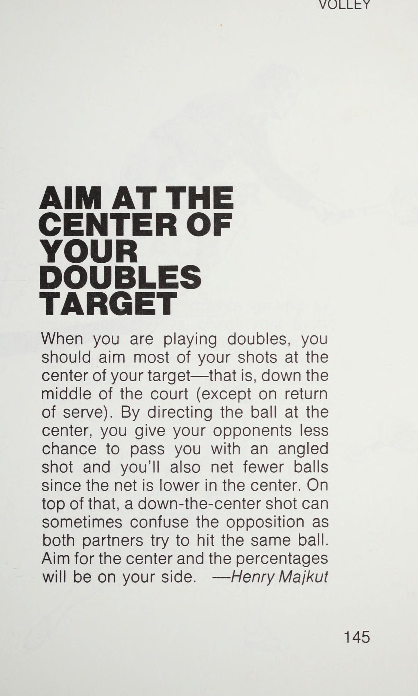
ôi.
BÓNG CHUYỂN XUỐNG NHƯ VẬY CHẠY NƯỚC CHO NHỮNG BÓNG CHUYỀN THẤP Những cú vô lê thấp và một nửa quả vô lê là những cú đánh khó nhất, nhưng bạn sẽ khiến chúng trở nên khó khăn hơn nếu bạn chỉ cúi người ở thắt lưng và thả đầu vợt xuống để gặp bóng. Bạn sẽ thành công hơn nhiều với những cú đánh này nếu bạn uốn cong đầu gối cũng như lưng.
Trên thực tế, trong một số trường hợp, đầu gối của bạn phải cong đến mức đầu gối sau của bạn gần như nằm trên sân. Ở vị trí này, bạn sẽ cúi xuống giống như một vận động viên chạy nước rút ở khu vực xuất phát.
Nhưng tư thế này sẽ cho phép bạn thực hiện cú vô lê trong khi vẫn giữ đầu vợt hướng lên trên.
—Ben Foster Toe VOLLEY CHÂN VÒI NHƯ MÈO Bạn đã bao giờ quan sát một con mèo đưa tay ra vồ một con côn trùng đi ngang qua chưa? Chuyển động vô lê của bạn phải lặp lại chuyển động nhanh và ngắn của con mèo từ vai. Cây vợt sẽ chỉ di chuyển một khoảng cách ngắn nhưng nó phải tăng tốc khá nhanh khi tiếp xúc để mang lại khả năng kiểm soát và độ sâu cho cú vô lê của bạn. Vì vậy, lần tới khi bạn cúi xuống lưới chuẩn bị thực hiện cú vô lê, hãy tưởng tượng rằng bạn là một con mèo và quả bóng là một con bướm đang chuyền qua. Đưa tay ra và vuốt bóng khi nó bay qua lưới.
—Dan Campbell ee vẫn giữ nguyên kiểu cầm vợt Bóp khi bạn đánh để có cú vô lê chắc chắn Nếu cú vô lê của bạn không ổn định, bạn có thể có cách cầm vợt mềm khiến vợt lung lay trong tay khi bạn đánh bóng.
Hãy thử bóp cán vợt nhanh và chắc như thể bạn đang cố bóp một quả cam — khi tiếp xúc với bóng.
Tay cầm chắc chắn hơn sẽ giữ cho cây vợt của bạn ổn định trong tay và kết quả là tạo ra những cú vô lê chính xác và hiệu quả hơn. Nhưng đừng nắm vợt quá chặt trong suốt cú đánh vì cơ tay và cánh tay của bạn sẽ bị mỏi. Chỉ cần siết chặt khi bạn đánh bóng.
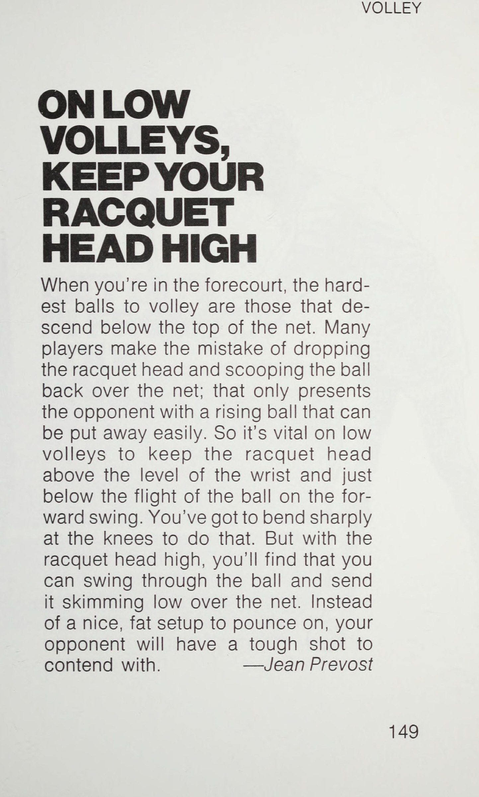
—Charles Tyrrell Qo chúng tôi giành được 2% BÓNG CHUYỀN CHO LẦN BÓNG CHUYỂN ĐẦU TIÊN CỦA BẠN Bạn có nhớ bạn đã từng chơi nhảy lò cò khi còn nhỏ không? Bạn sẽ chạy, tạm dừng và sau đó nhảy sang hai bên. Thực hiện những điều tương tự khi bạn tiến về phía lưới sau cú giao bóng của mình. Tạm dừng một lúc khi đối thủ trả giao bóng của bạn, quyết định hướng trả giao bóng sẽ diễn ra ở đâu và sau đó di chuyển theo đường chéo sang phía đó, giống như khi bạn chơi trò nhảy lò cò. Hãy tưởng tượng rằng cách bố trí trò nhảy lò cò nằm trên sân ngay phía trước ô giao bóng và bạn sẽ ở gần vị trí tốt nhất cho cú vô lê đầu tiên của mình.
—Peter Allen aeag uae” 44i tuổi CRRA RR AET iw S eeeessarani saa y than bùn enaebe ites chubobebcbebd td LEE BAR ECISE RHO?
Ôi!
CussUESReeetie We Gates ; iitcsunuacans Sry CHES ‘O28 PLITET Pri ii trie Lietitiiliieiioa PET) Lhd kd behell gucsenaeeer .;!
pegeeaeeee” trích dẫn eagnint Ht NGOGRRAL ea: sadbegetesees : C ree reet th pennenegi: th ein meas j } iri Saathapenennis +H HH Hee eer we BS a Sensapesit il WOLLEY ‘Tấn công bằng những cú vô lê đầu tiên của bạn Một khi bạn đã xác định được vị trí thích hợp để thực hiện cú vô lê, đừng lãng phí cơ hội. Bạn đang ở vị trí tấn công - vì vậy hãy tấn công bằng pháo hạng nặng của bạn.
Cú vô lê đầu tiên phải tiếp đất cách đường biên ngang của đối phương từ 3 đến 4 feet và, nếu có thể, ở phần sân mở. Bây giờ, hãy tận dụng lợi thế của bạn bằng cách di chuyển xa hơn về phía lưới vài bước theo hướng cú vô lê của bạn.
Nếu cú vô lê đầu tiên của bạn không xuyên thấu, không khiến đối thủ của bạn di chuyển để giành bóng và không khiến anh ta mất thăng bằng, anh ta sẽ bắt cú vô lê của bạn và có thể làm những điều khủng khiếp ảnh hưởng đến sự tự tin của bạn - chẳng hạn như thực hiện một cú chuyền bóng tàn khốc. Vì vậy, hãy thực hiện cú vô lê đầu tiên có ích cho bạn. —Chuck Morrison ii Qe fot
Phần 4: Cú Đập Overhead Hủy Diệt, Đòn Cảm Giác & Chiến Thuật Đỉnh Cao
Chương 8: Cú Đập Overhead Smash: Không Cho Đối Thủ Cơ Hội Chống Cự
Chapter 8: The Overhead Smash: Point the Non-Hitting Arm and Uncoil
TRÊN TRÊN HÃY CHUẨN BỊ CHO CUỘC ĐẤT Hãy đưa vợt của bạn lên và lùi lại khi bạn chuẩn bị cho một cú đập từ trên cao. Nếu bạn để cây vợt của mình lủng lẳng bên cạnh, bạn sẽ thực hiện cú vung vợt quá lớn và quá muộn. Để sẵn sàng cho cú đập bóng, hãy đặt vợt ra sau tai về phía vợt của bạn. Đầu vợt phải hướng xuống lưng bạn ở tư thế “gãi lưng rơi vợt (Backscratch Drop)”. Với cánh tay đánh bóng của bạn ở vị trí này, cú vung vợt của bạn sẽ ngắn hơn và kiểm soát tốt hơn.
Bạn sẽ không bị giảm sức mạnh và đạt được độ chính xác cao.—Ben Foster ——SH—E_O—_— aoa hoặc một ĐƯỜNG TRÊN TRÊN NHỮNG ĐƯỜNG TRÊN TRÊN Những tay vợt quần vợt cuối tuần thực hiện cú đập trên đầu nhiều hơn bất kỳ cú đánh nào khác. Nhưng có những lúc bạn nên đập bóng, đặc biệt là khi ở gần lưới. Đảm bảo đặt quả bóng ở phía trước bạn, giơ cánh tay còn lại của bạn lên để đánh giá — tức là theo dõi — đường đi xuống và đưa vợt ra sau tai.
Đừng kết thúc khi bạn thực hiện cú giao bóng, và đừng để lòng nhiệt thành của bạn đối với một cú đập ngoạn mục ngăn cản việc bạn thực hiện cú đánh đúng cách—Raymond Schuessler TRÊN ĐẦU MỌI NGƯỜI SỢ HƯỚNG DẪN NÓI MẮT!
Đánh một cú đánh từ trên cao vô nghĩa mang lại một trong những cảm giác hồi hộp lớn hơn trong quần vợt. Sự tự tin vào khả năng xử lý cú đánh này sẽ bổ sung thêm một chiều hướng hoàn toàn mới cho trò chơi của bạn. Nếu bạn tránh đánh đầu vì chúng gây rắc rối cho bạn - có thể là bối rối - thì rất có thể bạn đang mắc lỗi đánh đầu phổ biến nhất, đó là cúi đầu xuống trước khi tiếp xúc với bóng.
Tay vợt thường mắc lỗi này vì họ vô thức liếc nhìn khu vực mục tiêu của mình thay vì để mắt đến quả bóng đang đến gần. Khi bạn di chuyển sang vị trí hơi nghiêng về phía bóng bằng lưng vợt, hãy ngẩng cao đầu và nhìn vào quả bóng cho đến khi bạn tiếp xúc ngay trước trán với cánh tay duỗi thẳng hoàn toàn.
—Tom Hammang TẤN CÔNG TRÊN TRÊN CỦA BẠN TỪ PHÍA SAU Có phải hầu hết các đường bay trên không của bạn đều rơi vào lưới một cách vô nghĩa không? Nếu họ làm vậy, có thể là do bạn đánh bóng quá nhiều và do đó, tạo ra một góc quá sắc để cú sút có thể phá lưới một cách thỏa đáng. Để tránh cú đập mũi của bạn lao thẳng vào lưới, hãy tấn công bóng từ phía sau như thể bạn định đánh bóng theo chiều ngang. Cú búng tay và thực hiện theo cú đánh của bạn sẽ đủ để đưa bóng xuống phần sân của Đối thủ. Bằng cách tấn công bóng từ phía sau, bạn sẽ thực hiện được những cú đập sâu đi qua—chứ không phải vào—mạng.
—Dan Campbell cử chỉ, OOO EEE eee —_ VƯỢT TRÊN TRÊN ĐỂ GẶP BÓNG TRÊN ĐẦU CỦA BẠN Khi đánh một cú đánh trên cao, hãy đưa tay lên để đánh quả bóng đang rơi xuống. Bằng cách đó, điểm tiếp xúc sẽ ở phía trước cơ thể bạn một chút và cao nhất mà bạn có thể với tới. Vì vậy, bạn sẽ đánh bóng bằng một cú xoay hoàn toàn để có một cú đánh mạnh mẽ. Nếu bạn đợi quá lâu để đánh bóng qua đầu, bạn sẽ tiếp xúc với bóng với một cú xoay chật chội, điều này sẽ làm giảm sức mạnh và độ chính xác của bạn. Vì vậy, hãy vươn người lên để đón quả bóng đang tới và bạn sẽ thấy rằng mình sẽ sớm ngừng đánh sai cú đánh qua đầu của mình.
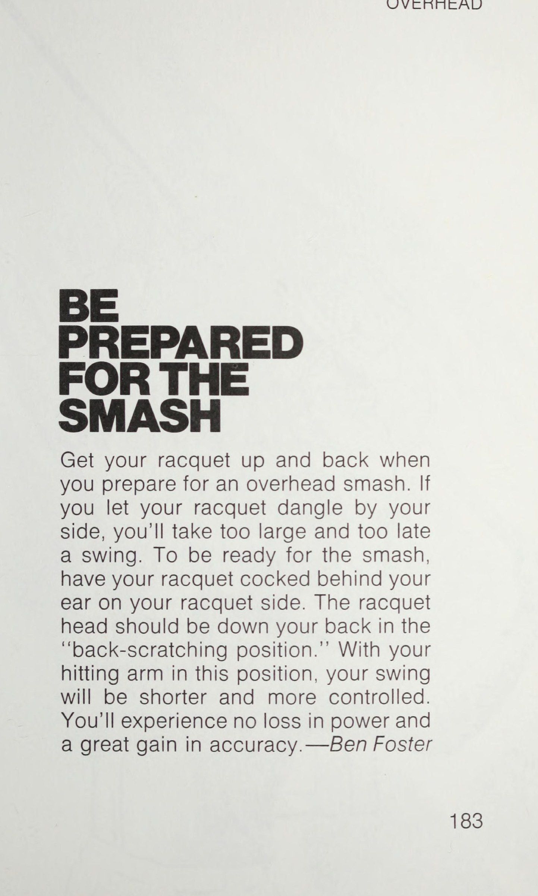
—Fernando Pinho Bạn có muốn học những bài học từ những giáo viên dạy tennis giỏi nhất trong trò chơi không? Tất nhiên là bạn sẽ làm vậy. Và đó là những gì BÀI HỌC TENNIS NGAY LẬP TỨC mang đến cho bạn: những gợi ý cá nhân mà bạn có thể sử dụng để cải thiện trò chơi của mình từ các thành viên của tổ chức chính thức gồm các chuyên gia giảng dạy, Hiệp hội Quần vợt Chuyên nghiệp Hoa Kỳ.
Mỗi bài học ban đầu xuất hiện trên tạp chí TENNIS, được thiết kế để giúp bạn đánh bóng tennis thành công. Nó tách biệt một yếu tố chính của trò chơi và sau đó giải thích ngắn gọn cách bạn có thể làm chủ nó.
NHƯ Sa MS 6 NS Xem ee ee ae | Mỗi bài học kết hợp văn bản với một minh họa rõ ràng, đầy đủ, để lại cho bạn một hình ảnh sinh động trong đầu mà bạn có thể mang theo bên mình và sử dụng trên sân.
Ví dụ: —để tạo áp lực thích hợp lên cán vợt, “Hãy tưởng tượng bạn có một chú chim trong tay (Bird in the Hand).” (xem trang 11) —ở tư thế sẵn sàng, “Hãy tưởng tượng có một quả bóng dưới gót chân bạn”. (trang 19) —khi thực hiện cú đánh trên mặt đất, '' Hãy dùng chân sau của bạn làm mỏ neo. (trang 43) Mỗi bài học đều được xem xét và phê duyệt bởi các thành viên Ban cố vấn giảng dạy của tạp chí TENNIS—Tony Trabert, Roy Emerson, Vic Seixas, Ron Holmberg, George Lott và Bill Price—tất cả các huấn luyện viên nổi tiếng cũng như cựu lãnh đạo Laas Chơi quần vợt tốt hơn với CÁC BÀI HỌC TENNIS NGAY LẬP TỨC!
is) za S a oe Ni —_ re) r) je) Lam tôi một.
®= à à không ba |
Chương 9: Đòn Cảm Giác: Cú Lốp Bóng Bổng & Cú Bỏ Nhỏ Ngụy Trang
Chapter 9: Touch Shots: High Defensive Lobs and Disguised Drop Shots
Đã bao nhiêu lần bạn chứng kiến một tay vợt đối mặt với một cú vô lê dễ dàng đưa bóng vào lưới hoặc ra khỏi sân? Bạn có thể giúp chuẩn bị cho những cú đánh chạm dễ dàng bằng cách thực hành cú vô lê trên lưới với một đồng đội. Cố gắng giữ bóng cách mặt đất và chơi càng lâu càng tốt cho đến khi có người đánh trượt. Sau đó, bạn có thể thay phiên nhau đưa bóng từ đường cuối sân để người ở trên lưới có thể thực hành các vị trí ở các phần khác nhau của sân. Hai bài tập này sẽ giúp bạn mài giũa cú vô lê của mình một cách nhanh chóng.
—Henry Majkut i errr BBOCBECCOL DGB BES oe ae| aE BOs Wid COBy Me DÒNG BÓNG CHUYỀN ĐẦU TIÊN TỪ DỊCH VỤ THỰC HÀNH COED AOI, LUBOCOEGCER.
CLERC CELE OEM.
ELLE RELIED Le i sO, Fe ee ee ces th OH i Or uk ies ESE TES wotnowe ne.
Vp bins > Hầu hết các tay vợt thích thực hiện cú vô lê từ vị trí cách lưới khoảng 5 đến 8 feet. Ở khoảng cách đó, rất ít quả bóng có thể rơi trúng dây giày của bạn. Tuy nhiên, có khả năng là bạn sẽ phải thực hiện cú vô lê đầu tiên trước đó trong khi vẫn đang trên đường lên lưới. Thông thường, bạn sẽ ở ngay gần đường dây dịch vụ. Vì vậy, trong buổi tập tiếp theo, tại sao bạn không tập đánh bóng từ thời điểm đó? Để thực hiện những cú vô lê chắc chắn từ vạch giao bóng, hãy cúi xuống thấp và giữ cổ tay thật chắc. Hãy luyện tập một vài cú vô lê như vậy và để ý xem trò chơi giao bóng và vô lê của bạn sẽ tiến bộ như thế nào. —Doug MacCurdy KHI GẶP LẠI SỰ CỐ, LOB tôi có thể nhớ một chương trình phát thanh ngày xưa thường giới thiệu mỗi tập phim với câu “Khi gặp khó khăn, hãy gọi cảnh sát trưởng.” Trong quần vợt, cụm từ đó nên được đổi thành “Khi gặp khó khăn, hãy đánh bóng”. Bạn có thể làm gì khi Đối thủ đẩy bạn sâu và tới một góc sân? Thùy, thùy, thùy!
Lobs có thể bị tấn công và phòng thủ. Lối phòng thủ không được thiết kế để đánh lừa đối thủ; nó được thiết kế để cho bạn thời gian phục hồi và giành lại vị trí tại tòa. Để có đủ thời gian, hãy đảm bảo đánh bóng thật cao và sâu (hãy nghĩ đến cảnh sát trưởng và nhắm đến một ngôi sao). Quá nhiều tay vợt không thể thực hiện cú lốp bóng (The Lob) bóng khi đó là cách duy nhất để bạn có thể giữ bóng cách xa Đối phương đủ lâu để lấy lại thời gian và vị trí. Rốt cuộc, anh ta không thể bắn trúng nó khi nó ở độ cao 40 feet trên không.
—Chuck Morrison LOB 1/3 RÚT LẠI NHƯ MỘT NGƯỜI NGOÀI TRƯỚC ĐỂ LOBS SÂU Để lấy một cú lốp bóng (The Lob) bóng sắp nảy gần đường cuối sân, đừng chỉ đạp ngược hướng vào lưới. Bạn sẽ không thể quay lại đủ nhanh. Thay vào đó, giống như một tiền vệ đuổi theo một quả bóng bay sâu, hãy xoay người và chân về phía hàng rào phía sau, quan sát quả bóng qua vai và chạy. Bằng cách quay đuôi theo cách này, bạn sẽ di chuyển nhanh hơn và bao phủ được nhiều mặt đất hơn. Và tất nhiên, phần thân trên của bạn sẽ nghiêng sang một bên và vợt của bạn sẽ quay trở lại, nghĩa là bạn sẽ sẵn sàng vung vợt ngay khi nó chạm tới bạn. Nhưng hãy nhớ luôn quan sát bóng qua vai.
—Ben Foster LOB nếu KIỂM TRA LOB CỦA BẠN ĐỂ XEM CHIỀU CAO VÀ TẦM XA Một cú lốp bóng (The Lob) bóng tốt thực sự là sự kết hợp giữa hai cú đánh: một cú đánh trực tiếp qua lưới và một quả bóng bay thẳng lên trời. Một cú lốp bóng (The Lob) bóng rõ ràng phải có độ sâu mà bạn mong đợi từ một cú công bóng và nó sẽ cần độ cao để vượt qua đối thủ của bạn trên lưới. Vì vậy, nếu bạn gặp khó khăn trong việc cảm nhận cú lốp bóng (The Lob) bóng, hãy thử hai cú xoay người: một cú đánh thẳng và một cú đánh thẳng đứng. Sau đó thử bắn giữa hai người. Chỉ cần luyện tập một chút, bạn sẽ không chỉ có cảm giác bắn mà còn có được độ cao và tầm bắn phù hợp giống như xạ thủ Hải quân bắn những loạt đạn thử nghiệm.
—Dave Kozlowski LOB, ví dụ: AR ĐƯA LOB CỦA BẠN TRÊN THANG MÁY KHI BẠN THEO QUA Để đánh cao hơn, lốp bóng sâu hơn, hãy giữ vợt của bạn trên bóng lâu hơn và theo sát bóng đầy đủ hơn. Hãy nghĩ về cây vợt của bạn như một chiếc thang máy. Bóng phải rơi ở tầng dưới cùng với điểm tiếp xúc cao ngang thắt lưng.
Nhấc vợt của bạn qua điểm tiếp xúc và tiếp tục nâng vợt sau khi tiếp xúc cho đến khi cánh tay của bạn duỗi hoàn toàn lên trên. Việc thực hiện theo cú đánh sẽ khiến bạn cảm thấy bóng ở trên vợt lâu hơn nhiều. Sử dụng chuyển động đi lên mượt mà như thang máy và thùy của bạn sẽ cao hơn và sâu hơn.
—James Burns LOB Bok ai ae elas OL, RIEL IS
Chương 10: Chiến Lược Thi Đấu Đơn & Định Vị Trong Đánh Đôi Toàn Diện
Chapter 10: Matchplay Tactics, Return Strategy, and Doubles Positioning
TRÊN TRÊN HÃY CHUẨN BỊ CHO CUỘC ĐẤT Hãy đưa vợt của bạn lên và lùi lại khi bạn chuẩn bị cho một cú đập từ trên cao. Nếu bạn để cây vợt của mình lủng lẳng bên cạnh, bạn sẽ thực hiện cú vung vợt quá lớn và quá muộn. Để sẵn sàng cho cú đập bóng, hãy đặt vợt ra sau tai về phía vợt của bạn. Đầu vợt phải hướng xuống lưng bạn ở tư thế “gãi lưng rơi vợt (Backscratch Drop)”. Với cánh tay đánh bóng của bạn ở vị trí này, cú vung vợt của bạn sẽ ngắn hơn và kiểm soát tốt hơn.
Bạn sẽ không bị giảm sức mạnh và đạt được độ chính xác cao.—Ben Foster ——SH—E_O—_— aoa hoặc một ĐƯỜNG TRÊN TRÊN NHỮNG ĐƯỜNG TRÊN TRÊN Những tay vợt quần vợt cuối tuần thực hiện cú đập trên đầu nhiều hơn bất kỳ cú đánh nào khác. Nhưng có những lúc bạn nên đập bóng, đặc biệt là khi ở gần lưới. Đảm bảo đặt quả bóng ở phía trước bạn, giơ cánh tay còn lại của bạn lên để đánh giá — tức là theo dõi — đường đi xuống và đưa vợt ra sau tai.
Đừng kết thúc khi bạn thực hiện cú giao bóng, và đừng để lòng nhiệt thành của bạn đối với một cú đập ngoạn mục ngăn cản việc bạn thực hiện cú đánh đúng cách—Raymond Schuessler TRÊN ĐẦU MỌI NGƯỜI SỢ HƯỚNG DẪN NÓI MẮT!
Đánh một cú đánh từ trên cao vô nghĩa mang đến một trong những cảm giác hồi hộp lớn hơn của quần vợt. Sự tự tin vào khả năng xử lý cú đánh này sẽ bổ sung thêm một chiều hướng hoàn toàn mới cho trò chơi của bạn. Nếu bạn tránh đánh đầu vì chúng gây rắc rối cho bạn - có thể là bối rối - thì rất có thể bạn đang mắc lỗi đánh đầu phổ biến nhất, đó là cúi đầu xuống trước khi tiếp xúc với bóng.
Tay vợt thường mắc lỗi này vì họ vô thức liếc nhìn khu vực mục tiêu của mình thay vì để mắt đến quả bóng đang đến gần. Khi bạn di chuyển sang vị trí hơi nghiêng về phía bóng bằng lưng vợt, hãy ngẩng cao đầu và nhìn vào quả bóng cho đến khi bạn tiếp xúc ngay trước trán với cánh tay duỗi thẳng hoàn toàn.
—Tom Hammang TẤN CÔNG TRÊN TRÊN CỦA BẠN TỪ PHÍA SAU Có phải hầu hết các đường bay trên không của bạn đều rơi vào lưới một cách vô nghĩa không? Nếu họ làm vậy, có thể là do bạn đánh bóng quá nhiều và do đó, tạo ra một góc quá sắc để cú sút có thể phá lưới một cách thỏa đáng. Để tránh cú đập mũi của bạn lao thẳng vào lưới, hãy tấn công bóng từ phía sau như thể bạn định đánh bóng theo chiều ngang. Cú búng tay và thực hiện theo cú đánh của bạn sẽ đủ để đưa bóng xuống phần sân của Đối thủ. Bằng cách tấn công bóng từ phía sau, bạn sẽ thực hiện được những cú đập sâu đi qua—chứ không phải vào—mạng.
—Dan Campbell cử chỉ, OOO EEE eee —_ VƯỢT TRÊN TRÊN ĐỂ GẶP BÓNG TRÊN TRÊN ĐẦU CỦA BẠN Khi đánh một cú qua đầu, hãy đưa tay lên để đánh quả bóng đang rơi xuống. Bằng cách đó, điểm tiếp xúc sẽ ở phía trước cơ thể bạn một chút và cao nhất mà bạn có thể với tới. Vì vậy, bạn sẽ đánh bóng bằng một cú xoay hoàn toàn để có một cú đánh mạnh mẽ. Nếu bạn đợi quá lâu để đánh bóng qua đầu, bạn sẽ tiếp xúc với bóng với một cú xoay chật chội, điều này sẽ làm giảm sức mạnh và độ chính xác của bạn. Vì vậy, hãy vươn người lên để đón quả bóng đang tới và bạn sẽ thấy rằng mình sẽ sớm ngừng đánh sai cú đánh qua đầu của mình.
—Fernando Pinho Bạn có muốn học bài từ những giáo viên dạy tennis giỏi nhất trong trò chơi không? Tất nhiên là bạn sẽ làm vậy. Và đó là những gì BÀI HỌC TENNIS NGAY LẬP TỨC mang đến cho bạn: những gợi ý cá nhân mà bạn có thể sử dụng để cải thiện trò chơi của mình từ các thành viên của tổ chức chính thức gồm các chuyên gia giảng dạy, Hiệp hội Quần vợt Chuyên nghiệp Hoa Kỳ.
Mỗi bài học ban đầu xuất hiện trên tạp chí TENNIS, được thiết kế để giúp bạn đánh bóng tennis thành công. Nó tách biệt một yếu tố chính của trò chơi và sau đó giải thích ngắn gọn cách bạn có thể làm chủ nó.
NHƯ Sa MS 6 NS Xem ee ee ae | Mỗi bài học kết hợp văn bản với một minh họa rõ ràng, đầy đủ, để lại cho bạn một hình ảnh sinh động trong đầu mà bạn có thể mang theo bên mình và sử dụng trên sân.
Ví dụ: —để tạo áp lực thích hợp lên cán vợt, “Hãy tưởng tượng bạn có một chú chim trong tay (Bird in the Hand).” (xem trang 11) —ở tư thế sẵn sàng, “Hãy tưởng tượng có một quả bóng dưới gót chân bạn”. (trang 19) —khi thực hiện cú đánh trên mặt đất, '' Hãy dùng chân sau của bạn làm mỏ neo. (trang 43) Mỗi bài học đều được xem xét và phê duyệt bởi các thành viên Ban cố vấn giảng dạy của tạp chí TENNIS—Tony Trabert, Roy Emerson, Vic Seixas, Ron Holmberg, George Lott và Bill Price—tất cả các huấn luyện viên nổi tiếng cũng như cựu lãnh đạo Laas Chơi quần vợt tốt hơn với CÁC BÀI HỌC TENNIS NGAY LẬP TỨC!
is) za S a oe Ni —_ re) r) je) Lam tôi một.
®= a a không ba |